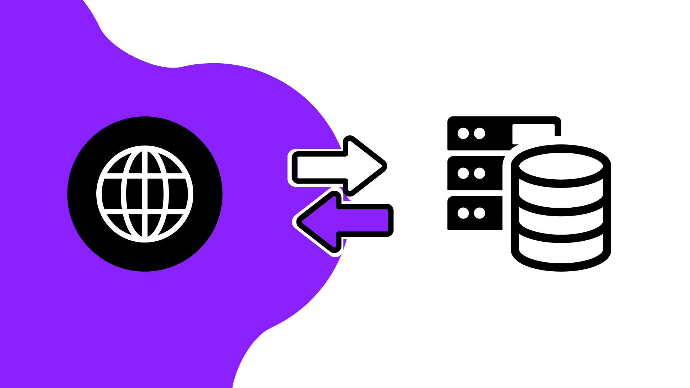

Creando mi propia API REST.
Usando .NET Core, Render y JS.
Actualizado: 13:01-25/11/2025

Recientemente me interesé por el diseño web, tras rehacer mi página web desde 0 y lidiar con JavaScript decidí llevarlo a un mayor nivel creando mi propia API Rest con .NET Core y mi mejor amigo C#. Para los recién llegados al mundillo, como yo hace unas semanas, una API REST es un sistema que permite comunicar diferentes puntos mediante peticiones HTTP, un protocolo rápido que transporta mensajes y los traduce para estos extremos.
¿Cómo funciona una API REST?
La cosa es sencilla, el cliente, generalmente un navegador realiza una petición a un servidor que aloja la API usando una URL de acceso, el servidor maneja esa petición que el desarrollador previamente ha desarrollado, en mi caso con .NET Core y devuelve una respuesta. Puede ser un error, un estado, un recurso, ...
Todo esto como ya mencioné lo habilita el desarrollador, puedes tener acceso a una base de datos por ejemplo, de hecho es un caso bastante común, o métodos genéricos como los que tengo activos en mi API ahora mismo para que funcionen desde esta web.
¿Qué he desarrollado con la API REST?
Comencé probando cosas simples como era crear una base de datos SQLite y conectarla a un controlador, por así decirlo, el sistema que gestiona tu petición HTTP y la procesa para mandar una respuesta al cliente. Además probé Swagger, una herramienta básica pero muy potente que trae .NET Core instalada al crear el proyecto de API REST que permite probar todas las posibles peticiones que tienes en tu sistema. Todo esto de la base de datos molaba pero no era lo que necesitaba si quería aplicarlo a un proyecto real como es el siguiente.
Actualmente en la web, hay un formulario de contacto que anteriormente tenía apuntando a un servicio externo, ya que mi web se aloja en Github Pages, un servicio de hosting rápido y gratuito directamente sincronizado con Github y sus repositorios, este no me permitía usar servicios de correo SMTP y similares, por lo que la opción más sencilla era apuntar a otro servicio. El problema estaba en acceder a ese servicio, era un paso intermedio que a su vez se me olvidaba y podía ocasionar que ni me enterara de cuando me contactaba alguien a través de la web. La solución que se me ocurrió fue crear la API para mandarme a mi mismo un correo electrónico y recibir la notificación en el móvil, mucho más sencillo y directo que entrar a un servicio externo. Después de un breve tiempo informándome e intentando realizar el sistema que mandaba correos funcionaba, al menos en localhost.

Decidí subirlo a Render, alojamiento en la nube para procesar backend con planes de pago pero también gratuitos con algunos límites como que tras unos minutos de inactividad tu sistema se apagaría hasta recibir una nueva orden que lo reactivara, perfecto para mi y justo lo que no me permitía Github Pages. Todo parecía bonito hasta que me encontré con dos problemas principales. Se debía subir con Docker o similar (No tenía ni idea de que era Docker) y que los servicios SMTP por seguridad, estaban bloqueados en Render y otros proveedores. Es entonces cuando decidí pivotar a algún sistema HTTP puro sin SMTP.
Consultando un poco que servicios me permitían una notificacióin rápida en móvil o similar descubrí que Telegram y Discord permiten que sus bots se integren con APIs como esta, de cabeza recurrí a Telegram para crear un bot y conectarlo a mi API.
Creando un bot para Telegram.
Crear un bot para Telegram es bastante sencillo, solo tienes que recurrir a @BotFather dentro de la aplicación, gracioso cuanto menos, y ejecutar el comando /start seguido de /newbot, el mismo te ayudará con la creación de tu bot y te proporcionará el API Token, necesario para usarlo desde tu API, este código es intransferible y no debe conocerlo nadie por lo que como al mandar correos con mi App Password de Google lo incluimos en una variable de entorno que solo conocerá tu SO al probar y tu API REST.
Otro paso necesario para poder manejar el bot y que se dirija exclusivamente a tu chat de Telegram y no a cualquier otro es iniciar tu bot con /start y recoger el id de tu chat a través de una ruta que te proporciona Telegram para poder ver un JSON con la información del bot que creaste (https://api.telegram.org/bot"BOT_TOKEN"/getUpdates), una vez ahí te aparecerá tu chat id.
Una vez tengamos tanto el token del bot como el id de tu chat agregamos como variables de entorno y ya podemos manejar el bot desde nuestra API REST. Tan solo queda manejar la petición desde nuestro cliente, en mi caso con un formulario y JS para mandar los datos y mostrar una respuesta visual.

Asi de sencillo creé mi propia API REST personal y poco a poco conociéndome tendrá más funcionalidades para la web como una newsletter o servicios varios.
Consejo adicional con Render
Anteriormente mencioné que Render tras unos minutos de inactividad se apaga hasta recibir otra petición en el plan gratuito, para una mayor agilidad y experiencia para el usuario esto se puede soliucionar un poco ya que si manda el formulario tendría que esperar para mandar el mensaje a que la API se encendiera de nuevo y que esta procesara la petición arruinando así la respuesta del usuario visible con JS.
Por ello en mi web uso con JS un método al ingresar a la web y cada 5 minutos manda una petición ping al servidor que si este estuviera apagado actúa como inicio, así al mandar un formulario no esperaría a que se encenciera, sino que ya estaría encendida en la mayoría de los casos.